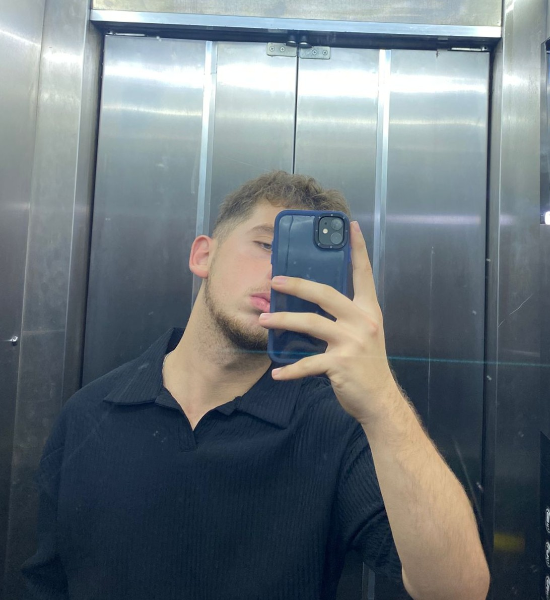

Merhaba ben Hasan Musab Yüksek. Teknolojiye ilgi duyan ve yazılım alanında kendini geliştirmeye çalışan biriyim. ama daha çok web tasarımı ve programlama konularına odaklanarak projeler üretmekte ve yeni bilgiler öğrenip kendimi bi ileri seviyeye geçirmek istoyrum.
Kariyerimde Bilgisayar Programcılığı üzerinde devam etcem. Kendimi geliştirip sonrasında kendi Şirketimi kurmayı düşünüyorum.
Okula Söğütlü İlkokulunda başladım sonra Söğütlü Ortaokulunda devam ettim.Liseyi ilk Anadoluda başladım 1 yıl okukuduktan sonra Meslek lisesine geçtim liseyi orda tamamladıktan sonra Üniversiteyi Gümüşhanede okuyorum 1. sınıf